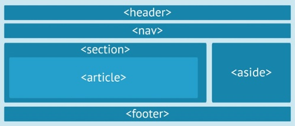

¿Estás aprendiendo HTML o CSS y no te enteras de nada?
¡NO TEMAS!
Aquí tienes un poco de ayuda para comenzar, dentro de poco podrás hacer cosas como las que ves abajo!
Toda WebApp o página web suele tener una estructura parecida a esta normalmente:
A su vez, el fichero <b>index.html</b>, tendrá como mínimo la siguiente estructura:
<!DOCTYPE html>
<html>
<head>
<meta charset="utf-8" />
<title>Título de la web</title>
<meta name="viewport" content="width=device-width, initial-scale=1">
<link rel="stylesheet" type="text/css" media="screen" href="css/main.css" />
<script src="js/main.js"></script>
</head>
<body>
</body>
</html>
Para indicar que es HTML5 ponemos la siguiente marca:
<!DOCTYPE html>
El elemento raíz de todo archivo html es la etiqueta:
<html>
</html>
Todo HTML debe tener las etiquetas HEAD (las cabeceras: normalmente es la metainformación, hojas de estilo, JavaScript, etc) y BODY (el contenido puro de la Web):
<!DOCTYPE>
<html>
<head></head>
<body></body>
</html>
Como hemos visto la cabecera va delimitada por la etiqueta <head>
1. Codificación de caracteres
2. Título de la página
3. En qué fichero o ficheros estan las hojas de estilo (css)
4. En qué fichero o ficheros esta el código JavaScript de mi página
Ejemplo:
<!DOCTYPE html>
<html>
<head>
<meta charset="utf-8" />
<title>Título de la web</title>
<meta name="viewport" content="width=device-width, initial-scale=1">
<link rel="stylesheet" type="text/css" media="screen" href="css/main.css" />
<script src="js/main.js">
</script>
</head>
<body>
Cuerpo de página
</body>
</html>
El cuerpo, etiqueta <body>, es como su nombre indica, el cuerpo de la página, el contenido "puro" textual de mi web.
A su vez el cuerpo contiene otras etiquetas para dar formato o información del texto de la Web. Distinguimos entre etiquetas semánticas y etiquetas de formato.
Para definir los títulos usaremos la etiqueta
Siendo h1 para el título y h2, h3, h4... para los encabezados.
Para poder introducir un párrafo necesitaremos usar la etiqueta
<p>Párrafo 1 </p>
<p>Párrafo 2 </p>
<p>Párrafo 3 </p>
Si necesitas insertar un salto de línea usa la etiqueta:
Si necesitamos insertar una línea horizontal de texto:
Son etiquetas que permiten marcar y dar formato a las palabras del texto.
Utilizamos la etiqueta <strong> </strong>
Por ejemplo:
<strong> Palabra </strong> se vería como Palabra
Utilizamos la etiqueta <em> </em>
<em> Palabra </em> se vería como Palabra
La etiqueta <sub> </sub> nos permite que el texto aparezca por debajo de la línea base y en un tamaño más pequeño.
Por ejemplo:
Palabra<sub>índice</sub> se vería como Palabraíndice
La etiqueta <sup> </sup> nos permite que el texto aparezca por encima y en un tamaño más pequeño.
Por ejemplo:
Palabra<sup>índice</sup> se vería como Palabraíndice
En este artículo vamos a ver las etiquetas semánticas de HTML5, como HEADER, ARTICLE, SECTION, ASIDE, FOOTER, NAV, FIGURE, TIME, ...
Lo primero que conviene remarcar es que HTML5 no es un lenguaje nuevo en contraposición a HTML, sino una nueva versión del mismo lenguaje. También hay que recordar que HTML5 incorpora cambios en profundidad que los navegadores antiguos no son capaces de mostrar, por lo tanto que hay que tener actualizado el navegador.
Las etiquetas semánticas ayudan a definir la estructura del documento y permiten que las páginas web sean mejor indexadas por los buscadores.
Una etiqueta se califica como semántica si tiene que ver el significado, es decir, si nos informa sobre lo que trata su contenido. Por ejemplo, la etiqueta SECTION nos dice que contiene una sección o capítulo dentro de la página. Frente a las etiquetas semánticas tenemos otros tipos de etiquetas como las que afectan al formato, como UL, a multimedia, como VIDEO, etc.
El esquema de una página con etiquetas semánticas podría ser el siguiente.

Antes de la existencia de las etiquetas semánticas, el contenido se estructuraba con etiquetas DIV que no aportaban ninguna información sobre el tema que trataban, salvo que se añadiese aprovechando el valor dado a la propiedad ID, o a la propiedad CLASS para hacer referencia a su contenido.
Las etiquetas a las que vamos a prestar más atención en este artículo son las que definen la estructura general del sitio ( HEADER, ARTICLE, SECTION, ASIDE, FOOTER, NAV ) aunque también existen otra nuevas etiquetas semánticas que señalan elementos concretos de la página como la etiqueta FIGURE, para imágenes y gráficos, la etiqueta FIGCAPTION, que es un pie de imagen, la etiqueta TIME para definir fechas y horas, también MAIN, MARK, SUMARY Y DETAILS.
Por ejemplo, el código siguiente produce el resultado que se ve a continuación utilizando las etiquetas FIGURE y FIGCAPTION.
Las listas en HTML van definidas con la etiqueta <li>.
Pueden ser de tres tipos:
El primer tipo es el no ordenado. En éste, los índices aparecen como símbolos, tal y como hemos visto antes. La lista va definida con la etiqueta <ul>. Dentro de su etiqueta <li> se les puede añadir un type para que el índice varie su forma. He aqui un ejemplo:
<li type="circle">Con type="circle".</li>
<li type="square">Con type="square".</li>
<li type="disc">Con type="disc".</li>
El segundo tipo es la lista ordenada. Este tipo va entre la etiqueta <ol> y dentro de la etiqueta del primer miembro de la lista se le añade un valor de la siguiente manera: <li value = "x">, siendo x el primer número del índice de la lista, el resto se pone de manera automática:
<li value="1"> El primer miembro de la lista, el cual añade value="x".</li>
<li>Segundo miembro de la lista.</li>
<li>Y así sucesivamente.</li>
La lista de definiciones, es el tercer tipo, la cual, va definida con la etiqueta <dl> y nos permite realizar un listado de definiciones.
Dentro de la etiqueta <dl> se implementan dos etiquetas: <dt> y <dd>.La primera sirve para crear el título de la lista a definir y el segundo para definirlo. Veamos un ejemplo:
<dt> Nombre del elemento a definir.</dt>
<dd> Definición del elemento, que es tabulado al crearlo para mejorar su visualización.</dd>
<dt> Segundo elemento de la lista de definiciones.</dt>
<dd> Definición del elemento.</dd>
</dl>Se empieza con la etiqueta <table>. Por cada fila se indica <tr> y por cada columna <td>
| Día/hora | Lunes | Martes | Miércoles | Jueves | Viernes |
| 10:30 | Matemáticas | Geografía | Física | Dibujo | Matemáticas |
<table border="1">
<tr>
<td>Lunes</td>
<td>Martes</td>
<td>Miércoles</td>
<td>Jueves</td>
<td>Viernes</td>
</tr>
<tr>
<td>10:30</td>
<td>Matemáticas</td>
<td>Geografía</td>
<td>Física</td>
<td>Dibujo</td>
<td>Matemáticas</td>
</tr>
</table>
El atributo border sirve para indicar la anchura del borde
El atributo cellpadding especifica el espacio en píxeles entre el borde de la celda y el contenido de la misma. En definitiva es el espacio interior de la celda.
El atributo cellspacing espacio en píxeles existente entre celda y celda
El atributo width anchura de la tabla, puede ser en píxeles o en porcentaje sobre la anchura de la página (usando el signo %)
El atributo rules indica qué bordes de la tabla se mostrarán:
Es muy habitual que las tablas muestren datos y que estos posean celdas que sirvan para describirles. Esas celdas se consideran de cabecera y se marcan con th. <th></th>
A las tablas se les puede poner un título con ayuda de la etiqueta caption. <caption></caption>
Hay tres elementos HTML que sirven para diferenciar las tres partes principales de una tabla
Ej:
Las etiquetas de columna (td y th) son las que poseen los atributos que permiten esta operación. En concreto son los atributos
Para generar tablas aún más complejas, se pueden meter elementos table, dentro de otras tablas. Lo que
se hace es meter una etiqueta table (con todos sus elementos de fila y columna) en un td o th.
Esta combinación permite realizar formatos de tabla a capricho y de esa forma conseguir disposiciones
de páginas extremadamente complejas.
Todo elemento en HTML se rodea de una caja con varias propiedades que pueden ser modificadas.
Los elementos margin (margen) y padding (contenido) nos permiten tener un gran control sobre cómo debe situarse cada elemento.
Cada elemento HTML de una página web cuenta con una anchura y una altura específica. En muchos casos, esas dimensiones se las proporciona el propio contenido, como por ejemplo en un párrafo o una imagen. Esos valores de anchura (width) y de altura (height) pueden ser modificados mediante las hojas de estilo gracias a las propiedades del mismo nombre. Así, podemos hacer párrafos más estrechos, imágenes que se sobredimensionen o simplemente ajustar diferentes bloques para que se acomoden correctamente en la pantalla. Los valores width y height se acompañan de un valor numérico exacto o de un porcentaje, como en otras muchas propiedades.
body {
principal { width: 400px;
background-color: rgb(0, 126, 0);
}
El margen viene dado por la propiedad margin, modificando el valor numerico (puede ser en porcentaje tambien), le daremos forma:
img { padding: 20px; }
El relleno es la distancia entre el borde y la imagen propiamente dicha. Para ello usaremos la propiedad padding. Se implementa igual que el margen.
img { padding: 5px; }
El borde se implementa con la propiedad border y simboliza la distancia entre el margen y el relleno.
img {
border-width: 2px;
border-style: solid;
border-color: #007000;
}
Las tres propiedades anteriores pueden usarse para modificar el lateral de una caja. Añadiendo a cada uno la variación -left (izquierda), -right (derecha), -top (arriba) y -down (abajo) conseguimos que sólo afecte al valor o a los valores indicados. Por ejemplo:
h1 {
margin-top:40px;
padding-left: 5px;
padding-right:5px;
border-top-width: 2px;
border-top-style: dotted;
border-top-color: #007000;
border-bottom-width: 2px;
border-bottom-style: double;
border-bottom-color: #007000;
}
El estilo se basa en una serie de valores concretos:
Permite trazar bordes en la caja usando border-radius acompañado de un valor numérico
img {
border: 2px solid #007000;
border-radius:25px;
}
Las cajas pueden proyectar una sombra. Para proyectar la sombra de la caja usamos la propiedad box-shadow.
table {box-shadow: 8px 8px 6px #aaaaaa; }
Con la propiedad float podemos reubicar los elementos. De esta manera, el contenido se situará alrededor de ese elemento
img { float:left;}
la etiqueta <div> nos permite definir un bloque o sección de la página. Esto nos permite tener varios estilos diferentes o aplicar estilos distintos a cada sección.
Veamos un ejemplo:
<div>
<h1>Índice</h1>
Página principal
Material multimedia
Autores
</div>
Esto nos ha permitido crear un bloque que hara de índice de contenidos. Aunque no veamos ningún cambio, la estructura interna del documento ha sido totalmente modificada.
Vamos a probar a aplicar una modificiación a la apariencia, añadiendo un estilo visto anteriormente, usando el atributo style y border, por ejemplo, para manipular el borde de la caja.
<div style="border: 2px solid rgb(204, 102, 204);">
Con la etiqueta span conseguimos un efecto similar a div, pero se aplica dentro de un párrafo. Mientras que al usar div, al cerrar la etiqueta, se empieza un párrafo nuevo.
Las etiquetas div y span se acompañan con dos parámetros destinados a identificar los bloques:
Usando id y class podemos diferenciar los distintos div y aplicar distintos CSS a cada uno o hacer que actuen de distinta forma según nos convengan.
Veamos un ejemplo para ver como funcionan:
<div id="indice">
índice
</div>
<div class="destacado">
Este texto se destaca mediante un estilo.
</div>
<div id="articulo15" class="articulos_estandar">
Texto de un artículo
</div>
Las etiquetas id y class pueden ser mezcladas manteniendo siempre las normas dichas anteriormente.
Los formularios son uno de los principales elementos que permite la iteraccion entre un usuario y un sitio web pues permiten enviar informacion al sitio web.
Para crear un formulario, lo primero que podria venir bien es hacer un esbozo o diseño para saber exactamente que queremos
Una vez realizado, el primer paso es añadir la etiqueta <form>, esta etiqueta es la que crea el formulario. Dentro cuenta con tres atributos:
La forma en la que quedaria el codigo de un formulario estandar, y del que partiremos para crear el ejemplo, es:
<form action="mailto:direcciondelcorreo@correo.com" method="post" enctype="text/plain">.
Empecemos por añadir cajas de texto basicas.
La caja de texto basica se escribe de la siguente forma: <input type="text" name="nombredelacaja"> y su apariencia seria:
Podemos completar el estilo de la caja con los siguientes atributos:
Un ejemplo con el codigo input <type="text" size="15" maxlength="30" value="Nombre" name="nombre"> :
Otro tipo de caja de texto es el <textarea0>
Este permite al usuario escribir libremente una gran cantidad de texto, como por ejemplo comentarios
<textarea name="comentarios" rows="10" cols="40">Escribe aquí tus comentarios>
Por ultimo tenemos los textos con password, que son aquellos que se codifican mediante simbolos para que no se puedan leer
<input type="password" name="contraseña">
Continuamos con los formularios. En ellos se pueden crear listas para que el usuario de un dato concreto, como por ejemplo que tipo de transporte usa con mas frecuencia.
Para ello usaremos la etiqueta <select name = " ">. Veamos un ejemplo
<select name="transporte">
<option>Coche </option>
<option>Avión </option>
<option>Tren </option>
</select>En este tipo de lista el usuario elige pulsando un boton la opción que quiera. Vamos a ver un ejemplo transformando la lista anterior en este tipo.
El resultado es:
Coche<input type="radio" name="transporte" value="1">Coche
<br>
<input type="radio" name="transporte" value="2">Avión
<br>
<input type="radio" name="transporte" value="3">Tren
Si dentro de su etiqueta <input> se puede añadir el atributo checked para que salga marcado por defecto.
Estas listas permiten elegir varios tipos diferentes al mismo tiempo. para ello se usa la etiqueta < input type=“checkbox”.>
Coche<input type="checkbox" name="transporte" value="1">Coche
<br>
<input type="checkbox" name="transporte" value="2" checked>Avión
<br>
<input type="checkbox" name="transporte" value="3">Tren
Con la etiqueta <input type="submit"> <input type="reset"> y se puede crear estos dos botones que permiten enviar la información o borrarla. Lleva un atributo value que permite darle nombre al botón
URLs Una URL (Uniform Resource Location) es la dirección concreta de un recurso (una página web, una imagen, un vídeo, un directorio,…) en Internet.
La gracia es que cada URL es única con lo que es una especie de DNI de un recurso. Si la URL es correcta sólo habrá un solo recurso posible al que se puede referir dicha URL.
Una URL se forma usando:
El protocolo. Ejemplos:
http:// (para recursos de la web)
https:// (para recursos de la web contenidos en un servidor seguro)
ftp:// (recursos contenidos en un servidor de ficheros)
ftps:// (recursos contenidos en un servidor de ficheros seguro)
mailto: (dirección de correo electrónico)
file:/// (recurso dentro de nuestra propia computadora)
Servidor. Nombre completo en Internet del servidor que aloja el recurso al que deseamos acceder.
Por ejemplo: www.nasa.gov, www.centrodonbosco.es o www.jorgesanchez.net
Puerto. Puerto por el que se debe conectar con el servidor para obtener el recurso. Si no se indica (que es lo habitual) se toma el puerto por defecto. Por ejemplo en http se usa el 80. Si queremos usar uno en particular se indica tras el servidor poniendo dos puntos y el puerto. Por ejemplo www.midb.com:1521
Ruta. Indica el recorrido dentro del servidor que hay que hacer en sus directorios para llegar al recurso que queremos. Se pone después del servidor. Ejemplos:
/index.html Accede a la página index.html situada en la raíz del servidor.
/imagenes/paisajes/foto001.jpg Accede a la imagen foto001.jpg dentro del directorio paisajes dentro, a su vez, del directorio paisajes.
Cadena de búsqueda. Sólo aparece tras direcciones a páginas web que admitan recibir parámetros (como las páginas PHP, ASP o JSP por ejemplo).
Ejemplo: ?pagina=5&idioma=es, pasará los parámetros página y lenguaje usando los valores 5 y es respectivamente.
Ejemplo de URL completa: www.ejemplourl.com:9000/dirs/srv/pagina1.php?a=90&r=7
Por otro lado los caracteres presentes en una URL deben de pertenecer al ASCII, de otro modo tendremos el sempiterno problema de que no se lea bien la URL por diferentes tipos de codificación del texto. De hecho los caracteres permitidos en una URL son:
A B C D E F G H I J K L M N O P Q R S T U V W X Y Z a b c d e f g h i j k l m n o p q r s t u v w x y z 0 1 2 3 4 5 6 7 8 9 0 - _ ~ .
Cualquier otro no es válido aunque sí aparecen los siguientes pero sólo para indicar elementos con significado especial (recorridos de la ruta, elementos de la parte de consulta de la URL,…). Estos símbolos están reservados para un uso concreto y no se pueden utilizar para ningún otro:
! # $ % & ' ( ) * + , / : ; = ? @ [ ]
Si una dirección URL requiere utilizar símbolos más allá de estos definidos, entonces necesitamos codificar dicho símbolo.
Si necesitamos codificar en la URL símbolos fuera de los caracteres permitidos entonces debemos codificarlos usando una notación que comienza con el símbolo % y le sigue el código hexadecimal correspondiente en el código ASCII.
Se utiliza para colocar elementos no pertenecientes al lenguaje HTML
Requiere una serie de atributos:
Nos permite incorporar cualquier tipo de contenido a la página.
Puede utilizar los siguientes atributos:
Dentro de la etiqueta <object> se utiliza <param> para indicarle al plugin del navegador como debe reproducir el video a través de los atributos name y value en los que indicamos la función que queremos y su funcionamiento.
La etiqueta <iframe> se utiliza para colocar un documento dentro de otro documento, incrustando así el contenido de una dirección en la página que lo referencia.
Puede utilizar los siguientes atributos:
La etiqueta <video> se utiliza para añadir videos a una página Web.
Puede utilizar los siguientes atributos:
Dentro del elemento <video> tenemos la etiqueta <source>
En esta etiqueta indicamos al navegador que el video se codifica en dos formatos distintos, de los que le damos una referencia para que escoja el formato que es capaz de reproducir.
Consta de dos atributos src y type en los que indicamos la URL que nos dirige al video y el MIME del video respectivamente.
Dentro de type se puede también indicar los codecs que el navegador necesita para reproducir el video.
La etiqueta <audio> se utiliza de forma similar a la de video.
Puede utilizar los siguientes atributos:
De nuevo, gracias a la etiqueta <source> podemos dar opciones de distintos formatos.
La etiqueta <canvas> </canvas> incorpora un área a la página web donde podremos dibujar elementos gráficos mediante lenguaje JavaScript. Lo que nos permite crear juegos, animaciones y elementos visuales. Requiere los siguientes atributos:
Dentro de la etiqueta canvas y mediante la etiqueta <script> </script> podemos incorporar el código JavaScript necesario para "dibujar" o "animar" en el lienzo.
La accesibilidad web tiene como objetivo lograr que las páginas web sean accesibles y utilizables por el máximo número de personas, independientemente de sus conocimientos, capacidades personales o las características técnicas del dispositivo de acceso empleado.
El grupo de trabajo "Iniciativa para la Accesibilidad Web (WAI)" publicó en 1999 la primera versión del documento recononcido como referencia internacionalmente aceptada sobre accesibilidad Web. Se trataba de "Web Content Accesibility Guidelines" (WCAG).
Estas directrices están dirigidas a los desarrolladores y diseñadores de sitios Web, desarrolladores de herramientas de autor para el diseño y programación de sitios Web, a los desarrolladores de herramientas de evaluación de la accesibilidad Web y para cualquiera que necesite un estándar de referencia para comprobar la accesibilidad de un determinado contenido en la Web.
La última versión del documento data de Junio de 2018, las WCAG 2.1. Puedes encontrar la versión anterior en español aquí.
En España disponemos de nuestra propia legislación: Real Decreto 1112/2018 para consultar la normativa relativa al sector público.
Las directrices WCAG 2.1 se componen de criterios de cumplimiento que a su vez van asociados a niveles de adecuación o conformidad que indican su impacto en la accesiblidad de la Web.
| Nivel | Descripción |
| A | Para lograr conformidad con el Nivel A (el mínimo), la página web satisface todos los Criterios de Conformidad del Nivel A, o proporciona una versión alternativa conforme. (Criterios de conformidad de nivel A) |
| AA | Para lograr conformidad con el Nivel AA, la página web satisface todos los Criterios de Conformidad de los Niveles A y AA, o proporciona una versión alternativa conforme al Nivel AA. (Criterios de conformidad de nivel AA) |
| AAA | Para lograr conformidad con el Nivel AAA, la página web satisface todos los Criterios de Conformidad de los Niveles A, AA y AAA, o proporciona una versión alternativa conforme al Nivel AAA.(Criterios de conformidad de nivel AAA) |
Una versión alternativa conforme debe tener las siguientes características:
El "Real Decreto 1112/2018 sobre accesibilidad de los sitios web y aplicaciones para dispositivos móviles del sector público" que entró en vigor el 20 de septiembre de 2018, traslada los requisitos de la Directiva europea 2016/2012, y obliga a que todos los sitios web y apps nativas de la Administración Pública, o que reciban financiación pública, sean accesibles.
Deroga los artículos 5, 6 y 7 del Real Decreto 1494/2007, que determinaban la normativa y el nivel de accesibilidad que tenían que cumplir los sitios web, así como el contenido mínimo que debían incluir en la declaración de conformidad. Ahora deben cumplir con la versión más reciente de la EN 301 549, actualmente equiparada al nivel AA de las WCAG 2.1, pero que incluye más requisitos que estas. Para cumplir con los requisitos del nivel AA es necesario cumplir con los 30 criterios de nivel A, los 20 de nivel AA y 5 requisitos de conformidad.
No solo los portales de la Administración Pública deben ser accesibles, también los de las empresas privadas que tienen más de 100 trabajadores o facturan más de 6 millones de euros.
A continuación se relacionan los requisitos obligatorios en las distintas plataformas.
Se puede deducir que es necesario cumplir con todos los criterios de los niveles A y AA y los requisitos de conformidad de la WCAG 2.1, pero además se deben cumplir los siguientes:
El anexo A de la norma indica que a las páginas web también aplican dos requisitos del capítulo "11. Software" de forma no condicional:
Además, los requisitos del capítulo 12 de la EN 301 549 son obligatorios de manera no condicional para las páginas web
Es necesario cumplir con los criterios de los niveles A y AA y los requisitos de conformidad de la WCAG 2.1 con algunas excepciones en el caso de las apps, pero además se deben cumplir los siguientes:
Las infracciones por incumplimiento de la normativa de accesibilidad web están tipificadas dentro del régimen de infracciones y sanciones en materia de igualdad de oportunidades, no discriminación y accesibilidad universal de las personas con discapacidad.
Se califican en tres niveles:
| Nivel | Sanción |
|---|---|
| Leve | Mínimo: 301 a 6000 € |
| Medio: 6.001 a 18.000 € | |
| Máximo: 18.001 a 30.000 € | |
| Grave | Mínimo: 30.000 a 60.000 € |
| Medio: 60.001 a 78.000 € | |
| Máximo: 78.001 a 90.000 € | |
| Muy Grave | Mínimo: 90.001 a 300.000 € |
| Medio: 300.001 a 600.000 € | |
| Máximo: 600.001 a 1.000.0000 € |
El codigo CSS va incluido en las etiquetas de los elementos del HTML utilizando el atributo style. Por ejemplo:
Este texto sale de color rojo.
<p style="color:red;">Este texto sale de color rojo. </p>
Mientras que anteriormente hemos visto que el código CSS va dentro de la etiqueta <style>. En este caso se colocará debajo del elemento <html> en la cabecera <head>. De esta manera el código se aplicará a toda la página.
Por ejemplo:
<style type = "text/css"> p{ color:red; } <p/>Esto hará que todas las etiquetas <p> se verán en rojo.
El elemento style usa fundamentalmente dos elementos:
La forma más utilizada es indicar los diferentes medios dentro del código en la directiva @media
Se trata de crear un archivo aparte con la extensión .CSS donde se insertará el código CSS que queramos usar. Este método tiene una gran ventaja y es que al tener el código CSS en un archivo aparte nos permite usarlo siempre que queramos de forma sencilla.
La manera de cargar el fichero .CSS es con el elemento link en la cabecera del html. Este elemento tiene dos atributos:
La propiedad backgroud-color permite establecer un color de fondo al elemento que se aplique la propiedad. Si se aplica al elemento body, toda la página tendrá ese color de fondo
La propiedad background-image permite establecer una imagen de fondo. La imagen se superpone al color de fondo, de mondo que si la imagen no se carga, entonces aparece el color de fondo
La imagen de fondo se repite las veces necesarias, hasta que se rellena el elemento.
Ej:
<!doctype html>
<html lang="es">
<head>
<meta
charset="UTF-8">
<style>
.fondo{
background-color: blue;
background-iimage: url(granito.png);
color: white;
}
</style>
</head>
<body>
<p class="fondo">Texto de prueba</p>
</body>
</html>
En principio, el fondo se repite en todas las direcciones hasta rellenar el elemento al que se aplica la
imagen de fondo.
Valores de la propiedad:
Con background-position, la imagen se coloca desde la esquina superior izquierda por defecto de la lpágina y desde ahí se repite (si se indicó la posición) o no.
background-position:posicionHorizontal; posicionVertical;
Podemos indicar ambos valores de esta forma:
Con las propiedades siguientes podemos hacer que el fondo quede fijo mientras que sólo el resto de elementos se mueven. Los posibles valores para la propiedad son:
El estilo de fuente nos permite cambiar el tamaño de la letra, su tipografia, anchura.
Este estilo nos permite cambiar el color de los textos. Se puede usar tanto el nombre del color en ingles como su modo RGB.
El modo RGB es mas recomendable pues no todos los colores son admitidos en el estandar. Veamos un ejemplo:
<div style="color:rgb(0, 47, 255);"> Este texto se verá de color azul.
Este estilo nos permite cambiar el tamaño de la fuente. Se puede usar tanto la unidad de medida de CSS (pixel) como los siguientes valores
Siendo el xx-large el más grande y el xx-small el más pequeño.
<div style="font-size:xx-large;"">Este texto tiene un tamaño xx-large</div>
<div style="font-size:15px;""> Este texto tiene un tamaño de 15 pixeles.</div>
Este estilo nos permite cambiar la tipografía, si no ponemos nada, el formato sera el determinado que tenga nuestro sistema. También se pueden usar distintos tipos formatos en un solo "font-family", de esta forma, siguiendo las preferencias, el navegador usará el primero que encuentre que esté instalado.
<div style=" font-family: Georgia, 'Times New Roman', serif;"">Este texto estará escrito con un determinado tipo de letra.</div">
Este estilo permite cambiar la anchura de cada caracter del texto. se puede especificar de dos maneras:
<div style=" font-weight: bold;">Estos caracteres tienen una anchura mayor.>
Para finalizar, este atributo nos permite cambiar el estilo de texto. Los que podemos usar son: normal, italic y oblique.
Este texto tiene un estilo italico
Este texto tiene un estilo oblique
Este texto tiene un estilo normal
<span style=" font-style: italic;">Este texto tiene un estilo italico</span>
<span style=" font-style: oblique;">Este texto tiene un estilo oblique</span>
<span style=" font-style: normal;">Este texto tiene un estilo normal</span>
Indica la distancia entre las palabras del texto. Usa las mismas medidas que la propiedad font-size.Ejemplo de texto con word-spacing:20px
Indica la distancia entre las letras del texto. Es similar a la anterior, pero ahora referida a la distancia horizontal entre caracteres. Ejemplo con letter-spacing:20px
Se indican posibles efectos en el texto. Valores:
Posición vertical del texto (o imagen) respecto a su contenedor. Es muy versátil porque permite tanto alinear en vertical un texto respecto, por ejemplo, a la celda de la tabla en la que se encuentre; como indicar superíndices y subíndices. Posibilidades:
Permite modificar el texto para que se muestre en mayúsculas o minúsculas.
Procede de CSS2, especifica la dirección en la que se escribe el texto. Posibilidades:
Parte de CSS3. Indica que hacer con el texto cuando está dentro de un contenedor (como una capa) y no tiene el tamaño suficiente para mostrartodoel texto. Posibilidades:
Se trata de una propiedad CSS3. Permite colocar una sombra al texto para darle efecto de volumen. Tiene esta sintaxis: text-shadow: color distanciaX distanciaY desenfoque;
Los selectores ID son elementos únicos, es decir, solo puede existir uno con el mismo "nombre de atributo". Esto nos permite incluir un único estilo al elemento en concreto que queramos. Veamos un ejemplo a continuación.
#rojoFuerte{
color: red;
font-weight: bold;
}
#amarillo{
color: yellow;
}
Este párrafo con atributo id = "rojoFuerte" es de color rojo y en negrita
En cambio este párrafo con diferente atributo id = "amarillo" es de color amarillo
Como vemos arriba, al incluir la en la etiqueta <style> el código, y luego dentro de la etiqueta <p> colocar id = "nombreDelId", su estilo cambiará al escrito en el codigo CSS. Para colocar una regla basta con poner '#' seguido del nombre que queramos darle. Entre llaves irá el código CSS.
En una página HTML puede haber infinitos atributos e ids, siempre que éstos tengan nombres distintos.Lo que significa que una vez asignado un nombre de atributo y un selector id, no se pueden usar en otro distinto.
El selector class, al contrario que el selector id, nos permite aplicar un estilo a varios elementos, incluso en etiquetas diferentes. Dentro de la <style> se usa la misma nomenclatura, pero en vez de usar '#' como los id, usan '.'.
.morado{
color: purple;
}
.naranja{
color: orange;
}
Párrafo afectado por la regla CSS global.
Párrafo con atributo class.
Otro párrafo que se ve afectado por la regla global.
Otro detalle a tener en cuenta es que antes del '.' que dstingue a cada selector, si ponemos una etiqueta, todas las etiquetas del HTML aplicaran ese selector sin necesidad de llamarlo como atributo de la etiqueta. También es importante destacar, que un selector id o class se prioriza antes que un selector CSS global.
Esta aplicación forma parte de los ejercicios prácticos de la asignatura de Lenguaje De Marcas y Sistemas de Gestión de Información del curso 1º de Desarrollo de Aplicaciones Multiplataforma.
I.E.S. Virgen del Carmen de Jaén
La aplicación tiene un funcionamiento muy simple. En la barra de navegación se pueden seleccionar los apartados a consultar.